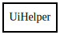

UiHelper
Object Hierarchy:

Description:
public class UiHelper
UiHelper: A utility class for creating and managing UI components in a Gtk application. This class provides static methods to create
labeled rows, list rows, section headers, and separators within a Gtk Grid layout. Methods: - create_label_row: Creates a row with a bold
label and a value. - create_list_row: Creates a row with a bold label and a list of items, supporting markup. - add_section_header: Adds a
section header to the grid. - add_separator: Adds a horizontal separator to the grid.
Content:
Static methods:
- public static void add_section_header (Grid grid, ref int row, string text)
Adds a section header to the grid.
- public static void add_separator (Grid grid, ref int row)
Adds a horizontal separator to the grid.
- public static void create_label_row (Grid grid, ref int row, string label_text, string value_text)
Creates a labeled row in the provided grid.
- public static void create_list_row (Grid grid, ref int row, string label_text, List<string> items, bool use_markup = false)
Creates a list row in the provided grid.
Creation methods: